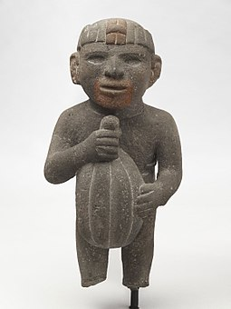
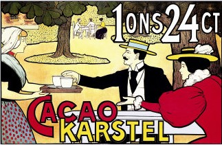

A brief introduction to the world's greatest sweet pleasure
This represents an homage to one of the greatest pleasures one can have while biting into a square-shaped
thing: a piece of chocolate
Chocolate is one of the most popular food types and flavors in the world, and many foodstuffs involving chocolate
exist, particularly desserts, including cakes, pudding, mousse, chocolate brownies, and chocolate chip cookies.
Many candies are filled with or coated with sweetened chocolate. Chocolate bars, either made of solid chocolate
or other ingredients coated in chocolate, are eaten as snacks. Chocolate is also used in cold and hot beverages,
such as chocolate milk and hot chocolate, and in some alcoholic drinks.
But now, let's try to dig a bit into it's convoluted past
History
Mesoamerican usage
Chocolate has been prepared as a drink for nearly all of its history. For example, one vessel found at an
Olmec archaeological site on the Gulf Coast of Veracruz, Mexico, dates chocolate's preparation by
pre-Olmec peoples as early as 1750 BC. On the Pacific coast of Chiapas, Mexico, a Mokaya
archaeological site provides evidence of cocoa beverages dating even earlier, to 1900 BC.
The residues and the kind of vessel in which they were found indicate the initial use of cocoa was not
simply as a beverage, but the white pulp around the cocoa beans was likely used as a source of
fermentable sugars for an alcoholic drink.

Funny dude carrying a cacao pod
European adaptation
Until the 16th century, no European had ever heard of the popular drink from the Central American
peoples. Christopher Columbus and his son Ferdinand encountered the cocoa bean on Columbus's fourth
mission to the Americas on 15 August 1502, when he and his crew stole a large native canoe that proved
to contain cocoa beans among other goods for trade.[19] Spanish conquistador Hernán Cortés may have been
the first European to encounter it, as the frothy drink was part of the after-dinner routine of
Montezuma.José de Acosta, a Spanish Jesuit missionary who lived in Peru and then Mexico in the later
16th century, wrote of its growing influence on the Spaniards:
Although bananas are more profitable, cocoa is more highly esteemed in Mexico. Cocoa is a smaller
fruit than almonds and thicker, which toasted do not taste bad. It is so prized among the Indians and
even among Spaniards because since it is a dried fruit it can be stored for a long time without
deterioration, and they brings ships loaded with them from the province of Guatemala. It also serves
as currency, because with five cocoas you can buy one thing, with thirty another, and with a hundred
something else, without there being contradiction; and they give these cocoas as alms to the poor who
beg for them.

Chocolate ad from the 20th century
Present days
The availability
In the times we live, the fortune came upon to have chocolate available in whichever store we wish to
enter. Taking in consideration the wide range of chocolate product available, let's find out more about the
cocoa contents of a product